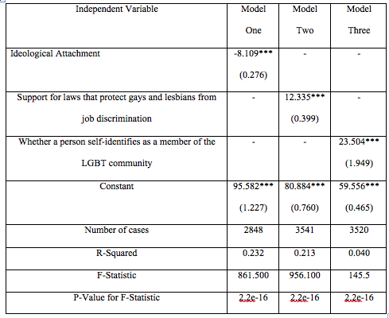

I am an Indian, born in the United States.
I would consider myself someone who is very eager to learn new things. I am a go-getter, who enjoys gaining new knowledge. I spend my free time playing piano, painting, writing, cooking, and of course coding.
I have a bachelor's in political science with minors in environmental science and pre-law. I am hoping to use this education to pursure a career in environmental law.
Along with my passion to learn, I have a passion for travelling. I have been roaming the world my entire life with my family and friends. So far I have been to five out of the seven continents and I plan to go to all seven as soon as I can.
Contact Info
Email: snepate96@gmail.com
Experience and Education
I have a bachelor's in political science with minors in environmental science and pre-law. I am hoping to use this education to pursue a career in environmental law.
During my time at Southern Illinois University, I coded briefly in R. We utilized this programming language in my political analysis class to analyze the results of the National Eleciton Studies (NES). Although my time working in R was rather brief, it sparked my interest in coding, which is how I ended up in Launchcode
Project Showcase
During my time in political analysis, I worked with the programming language, R. I used R to analyze results from the American National Election Studies, which are conducted before and after each election. We analyzed this data by obtaining the mean, median, mode, range, and standard deviation for data that we were interested in.
One data point we analyzed were feelings toward gay men and lesbians, which is one of the questions included in the NES Data. After using R to obtain the mean, median, mode, range, and standard deviation, we were able to determine that public feelings towards gay men and lesbians are generally on the positive side, but were very varied.
In addition to analyzing the public's feelings about gay men and lesbians, we decided to compare these feelings to one's ideological attachment in a liberal or conservative direction. We found that the stronger the ideological attachment in any direction, the stronger the feelings about gay men and lesbians were.